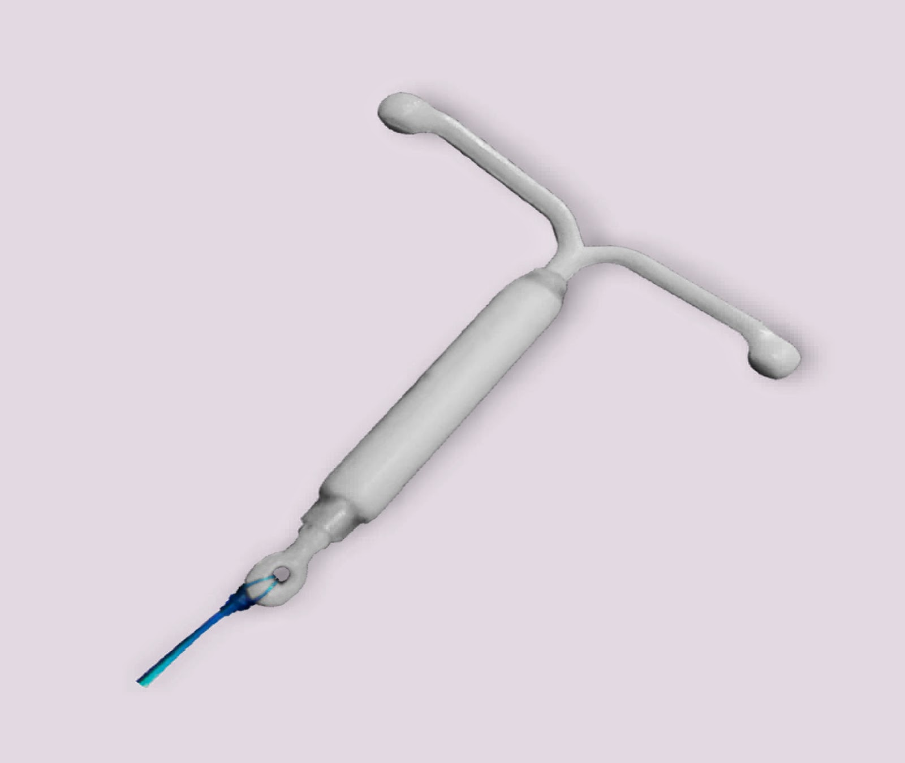

¿Qué es el DIU?
El DIU es un pequeño dispositivo en forma de "T" que se coloca en el útero para prevenir embarazos. Es un método anticonceptivo de larga duración, reversible y altamente eficaz.
Tipos de DIU
- DIU de cobre: no contiene hormonas. Libera cobre para evitar la fertilización.
- DIU hormonal: libera una hormona llamada levonorgestrel que espesa el moco cervical e impide la ovulación en algunos casos.
Ventajas del DIU
- Duración de 3 a 10 años, según el tipo.
- No requiere mantenimiento diario.
- Puedes quedar embarazada rápidamente después de retirarlo.
Consideraciones
Debe ser colocado por un profesional de salud. En algunos casos puede causar molestias o alteraciones menstruales temporales.
